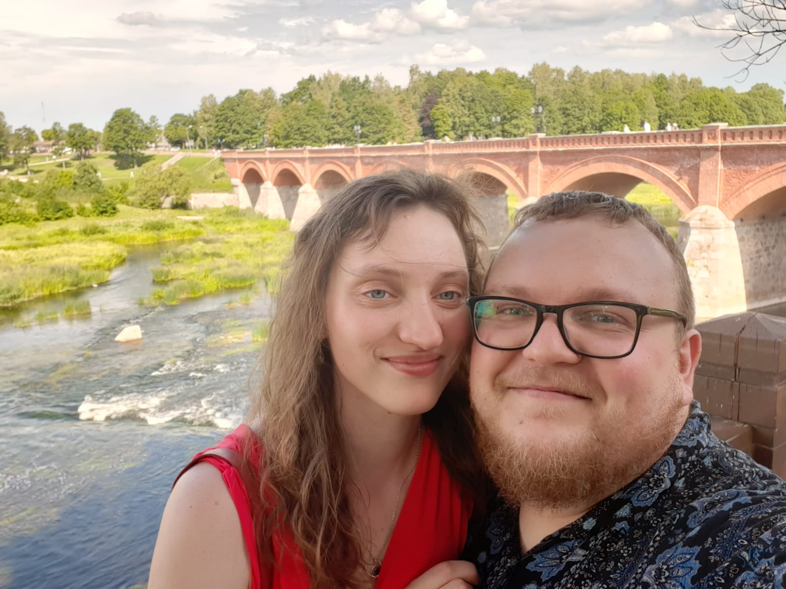

15.05.2021
Kuldīgas dzimsrakstu nodaļā plkst. 13:00
Virtuālais ielūgums
Ar šo mēs ielūdzam tevi uz savām virtuālajām kāzām, kas norisināsies 15. maijā 2021. gadā plkst. 13:00.
Ņemot vērā spēkā esošos ierobežojumus nevaram pieņemt viesus klātienē, bet vēlamies dot iespēju būt klāt virtuāli.
Tiklīdz būs iespējams - mēs noteikti uzrīkosim ballīti, lai varētu nosvinēt šo mums svarīgo brīdi. Par to mēs solāmies izziņot laicīgi.
Māris & Krista
Vedēji
Raimonds un Sanita gādās par mūsu labsajūtu šajā skaistajā dienā.
Raimonds, komentējot kāpēc ir nokļuvis vedēja lomā, teica:"Esam ar Māri vienā sektā, tādēļ ticība neļauj atteikt."
Raimonds & Sanita
Tiešsaistes video
Tiešaisstes translācija sāksies plkst. 13:00 un būs pieejama YouTube https://youtu.be/NxHpGdTQmcY. Vari to skatīties arī zemāk.
Tiešraides būs ar nelielām pauzēm orientējoši svarīgākie laiki ir 13:00, 13:30, 15:00, 16:00, 18:00, 19:00.
Iegultais video